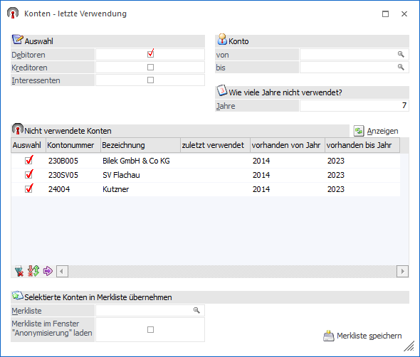
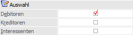
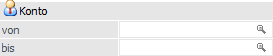
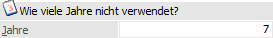
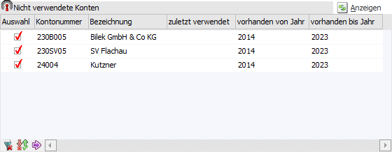
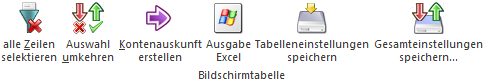
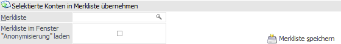
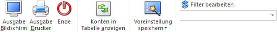

Das Fenster "Konten - letzte Verwendung", welches über den Menüpunkt…
1 WinLine START
1 Abschluss
1 Kunden
1 Letzte Verwendung
… aufgerufen wird, prüft nach Personenkonten bzw. Interessenten, welche seit einer bestimmten Anzahl von Jahren nicht mehr verwendet wurden. Die auf diese Art ermittelten Konten können direkt im Fenster Anonymisierung weiterbearbeitet werden.
Hinweis
Die Überprüfung, ob ein Konto verwendet wurde oder nicht, erfolgt über das FIBU-Journal und die Belegkopf-Tabelle.
Des Weiteren werden nur Hauptkonten in der Auswertung bzw. der Bildschirmtabelle ausgegeben. Subkonten werden allerdings insofern berücksichtigt, dass, wenn sie später zuletzt verwendet wurden als das dazugehörige Hauptkonto, das Hauptkonto entsprechend aktualisiert wird, d.h. nicht in die Ausgabe übernommen.

Auswahl

Ø Debitoren
Wird diese Option aktiviert, so werden Personenkonten vom Typ "Debitor" bei der Prüfung berücksichtigt.
Ø Kreditoren
Wird diese Option aktiviert, so werden Personenkonten vom Typ "Kreditor" bei der Prüfung berücksichtigt.
Ø Interessenten
Wird diese Option aktiviert, so werden Interessenten bei der Prüfung berücksichtigt.
Konto

Ø Konto von / bis
An dieser Stelle kann eine Einschränkung auf den Kontenbereich erfolgen, für welchen die Prüfung ausgeführt werden soll. Die Kontenangaben schränken den zuvor definierten Bereich der Kontenarten (siehe Bereich "Auswahl") weiter ein.
Wie viele Jahr nicht verwendet?

Ø Jahre
Hier erfolgt die Hinterlegung der Anzahl der Jahre für die Prüfung auf nicht Verwendung, wobei der Standardvorschlag abhängig vom Länderkennzeichen des Mandanten (siehe "FIBU-Parameter") ist:
ü Mandant mit Landeskennzeichen
"Deutschland"
10 Jahre
ü Mandant mit Landeskennzeichen
ungleich "Deutschland"
7 Jahre
Als Stichtag der Prüfung (für die letzte Verwendung) wird dabei der Beginn des aktuellen Wirtschaftsjahres abzüglich Anzahl der eingetragenen Jahre verwendet.
Beispiel
Wenn das aktuelle Datum der 30.9.2024 ist, das Wirtschaftsjahr am 1.1.2024 beginnt und 7 Jahre ausgewählt wurden, so werden alle Konten bei der Prüfung berücksichtigt, die vor dem 1.1.2017 zuletzt verwendet wurden.
Bei der Prüfung wird das FIBU-Journal und die Belegkopf-Tabelle abgefragt, wann ein Konto zuletzt verwendet wurde. Personenkonten, die vor dem Stichtag zuletzt verwendet wurden, werden in der Auswertung bzw. in der Bildschirmtabelle angezeigt.
Anzeigen
Ø Anzeigen
Durch Anwahl des Buttons "Anzeigen" wird die Prüfung gestartet und die Tabelle "Nicht verwendete Konten" mit den gefundenen Konten befüllt.
Tabelle "Nicht verwendete Konten"

Nach Anwahl des Fensterbuttons "Anzeigen" bzw. des Buttons "Konten in Tabelle anzeigen" werden die gefundenen Konten in der Tabelle angezeigt. Folgende Spalten stehen hierbei zur Verfügung:
Ø Auswahl
Durch Aktivierung dieser Checkbox wird das Konto bei der Erzeugung einer Merkliste (siehe Bereich "Selektiere Konten in Merkliste übernehmen") berücksichtigt.
Ø Kontonummer / Bezeichnung
In diesen Spalten wird die Kontonummer und die Bezeichnung des nicht mehr verwendeten Kontos angezeigt.
Ø zuletzt verwendet
Das letzte Verwendungsdatum des Kontos wird in dieser Spalte angezeigt.
Ø vorhanden von Jahr / vorhanden bis Jahr
Hier wird das erste und das letzte Wirtschaftsjahr angezeigt, in welchem das Konto vorhanden ist. Für jene Konten, die im aktuellen Wirtschaftsjahr nicht vorhanden sind, wird die Zeile farblich gekennzeichnet.
Tabellenbuttons

Ø alle Zeilen selektieren
Durch Anwahl dieses Buttons werden alle Zeilen in der Tabelle selektiert.
Ø Auswahl umkehren
Durch Anwahl des Buttons wird die Auswahl in der Tabelle umgedreht.
Ø Kontenauskunft anzeigen
Mit Hilfe des Buttons "Kontenauskunft anzeigen" wird für das markierte Konto die Kontenauskunft in der WinLine INFO erstellt.
Ø Ausgabe Excel
Durch Anwahl des Buttons "Ausgabe Excel" wird der Inhalt der Tabelle an Microsoft Excel übergeben.
Ø Tabelleneinstellungen speichern
Die Spalten einer Tabelle können grundsätzlich an beliebige Positionen verschoben, bzw. in der Breite entsprechend angepasst werden. Durch Anwahl des Buttons "Tabelleneinstellungen speichern" werden die Einstellungen benutzerspezifisch gespeichert und bei dem nächsten Aufruf des Programmpunktes wieder vorgeschlagen.
Ø Gesamteinstellungen speichern
Im Gegensatz zu "Tabelleneinstellungen speichern" können mit "Gesamteinstellungen speichern" mehrere Tabellenaufbauten gespeichert und nach Wunsch geladen werden. Zusätzlich werden Sonderfunktionen der Tabelle (z.B. "Spalte gruppieren") ebenfalls bei der Speicherung bedacht.
Selektiere Konten in Merkliste übernehmen

Ø Merkliste
An dieser Stelle wird der Name eingetragen (max. 20 Zeichen), unter welcher die Merkliste (mit den selektierten Konten) gespeichert werden soll. Durch Drücken der F9-Taste kann nach allen bereits angelegten Merklisten gesucht werden.
Ø Merkliste im Fenster Anonymisierung laden
Wenn diese Option aktiviert ist, so wird die (neue) Merkliste sofort im Fenster Anonymisierung geladen.
Ø Merkliste speichern
Durch Anwahl dieses Buttons wird die neue bzw. bestehende Merkliste gespeichert und ggfs. auch gleich im Programm Anonymisierung geladen.
Buttons

Ø Ausgabe Bildschirm
Mit Hilfe des Buttons "Ausgabe Bildschirm" oder der Taste F5 wird die Auswertung am Bildschirm ausgegeben.
Ø Ausgabe Drucker
Durch Anwahl des Buttons "Ausgabe Drucker" wird die Auswertung am Drucker ausgegeben.
Ø Ende
Durch Anwahl des Buttons "Ende" bzw. der Taste ESC wird Fenster geschlossen.
Ø Konten in Tabelle anzeigen
Durch Anwahl des Buttons "Konten in Tabelle anzeigen" wird die Prüfung gestartet und die Tabelle der nicht verwendeten Konten mit den gefundenen Konten befüllt.
Ø Voreinstellung speichern
Durch Anwahl dieses Buttons erfolgt eine benutzerspezifische Speicherung aller im Fenster getätigten Einstellungen. Diese sogenannten "Voreinstellungen" können jederzeit wieder abgerufen werden und ermöglichen dadurch ein schnelleres und zielorientierteres Arbeiten (nähere Informationen entnehmen Sie bitte dem Kapitel "Die Voreinstellungen").
Ø Filter bearbeiten
Durch Anklicken des Buttons "Filter bearbeiten" kann die Auswertung nach frei definierbaren Kriterien eingeschränkt werden, wobei die Tabellen des Kontenstammes zur Verfügung stehen.